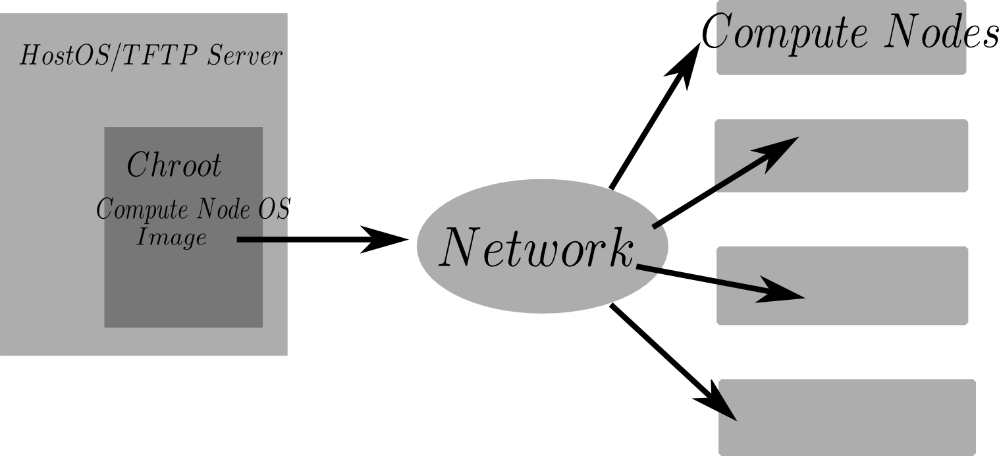

Head Node OS Install¶
When installing Debian on the head node, take care to configure the raid 10 correctly, utilizing all drives in a single mdraid storage pool. A recommended raid 10 + LVM setup is shown below. Logical Volume Management (LVM) is useful when creating backup snapshots or resizing partitions.:
-------------------------------------------------------------
| RAID 10 Array |
| Disk 1 (sda) | Disk 2 (sdb) | Disk 3 (sdc) | Disk 4 (sdd) | <- config each divice as RAID device
-------------------------------------------------------------
| LVM | <- Use entire raid10 in LVM pool
-------------------------------------------------------------
| LVM locigal vol "home" | LVM logical vol "root"| <- LVM logical volumes
-------------------------------------------------------------
| /home (~1.5Tb) | / (~0.5Tb) | <- fs mounts
-------------------------------------------------------------
Note
Ensure to mark _atleast_ one disk with a “bootable” flag durring the partitioning step. As of the time of this writing (fall 2015) grub can boot from the /boot directory located inside a raid 10 array. No need to make a seperate /boot partition.
The Debian installer will ask
for a new user to be setup (in addition to the root account). This user should be the default system administration account. For the purpose of this guide, the administrator account is admin.
Note
The administrators account is NOT the root account. We will dissallow root login from the outside world to the cluster in future steps. When first logging in as an admin you must switch users to the root account to make modifications to the base system. Installing sudo and adding admin users to the sudo group aliviates some minor annoyances of having to type “su” all the time.
During the install procedure, there will be an option to install some software packages. They are all optional, however, it is recommended to install the ssh package and disable any “printer” packages. It is not necessary to install a graphical desktop environment - it will only consume hard drive space but has no other consequences.
From here on, every command that is
executed as root will have a # symbol preceding it. Every command that is executed
by a limited privileged account will be preceded by a $.
If no graphical desktop environment package was selected during the initial install, you can choose to install a minimal gui desktop environment after you boot the new head node OS for the first time. X11, a basic web browser such as Madori and a simple desktop environment should be installed on the head node.
# apt-get update
# apt-get install Xorg madori dwm
If dwm is installed, the contents of $~/.xinitrc should contain.
exec dwm &
The graphical environment is launched by
$startx
This will allow easy graphical configuration of the Firewall in the following steps. Avoid running X11 as root. The user should learn the basic commands of dwm before use. Dwm is a minimal desktop window manager. Read Dwm’s documentation for details on how to resize windows, open a terminal (super + enter), or launch applications (super + p or super + space by default).
Note
It is not known at this time if infiniband will be useded for interconnects or not. It may be very expensive to buy the networking equipment to do so. IF you are so lucky to have infiniband interconnects you should install IPoIB (IP over Infiniband) on the head node and storage nodes. This will allow the infiniband LAN to be managed just like an ethernet network.
Configure Head Node¶
These steps are to be executed after a fresh install of Debian Linux is made on the head node.
The following image illustrates the setup we are working towards:
{kind=link}
In this guide, the terms HostOS and Base OS will be used interchangeably.
Become root
$su -
Update /etc/hosts. Ensure this file contains all IPs and hostnames of all nodes
192.168.1.101 nukestar01
192.168.1.102 nukestar02
192.168.1.103 nukestar03
192.168.1.104 nukestar04
192.168.1.105 nukestar05
192.168.1.106 nukestar06
Install prerequisite software
#apt-get update
#apt-get install tftpd-hpa nfs-kernel-server debootstrap syslinux ssh nfs-common pxelinux ntp
Make root rsa ssh key pair
#cd /root
#ssh-keygen -t rsa
do not set a password when propted (password-less key based login will be used).
Setup Chroot¶
Make a chroot root dir and chroot home dir. Debootstrap install into /srv/nukeroot directory.
#mkdir -p /srv/nukeroot /home/srv/nukehome
#debootstrap jessie /srv/nukeroot http://http.debian.net/debian
Update /etc/fstab on host OS
#echo "/home/srv/nukehome /srv/nukeroot/home bind defaults,bind 0 0" >> /etc/fstab
#echo "/dev /srv/nukeroot/dev auto bind 0 0" >> /etc/fstab
#echo "/dev/pts /srv/nukeroot/dev/pts auto bind 0 0" >> /etc/fstab
#mount -a
Configure Chroot¶
Place the contents of the base OS root public ssh key: /root/.ssh/id_rsa.pub
in the chroot /srv/nukeroot/root/.ssh/authorized_keys file. Make the
/srv/nukeroot/root/.ssh/authorized_keys file if it does not exist.
Note
This is required for the Ansible scripts to work properly. Ansible relies on communication over ssh. If you do not want to use the ansible scripts, then ignore.
chroot
#chroot /srv/nukeroot
NOTE: All chroot commands will be preceeded with #>.
Clear contents of #>/etc/hostname because hostname will be obtained from DHCP server.
Enable non-free package repo. Edit #>/etc/apt/sources.list so it contains
deb http://http.debian.net/debian jessie main non-free
Install base packages in chroot environment
#>apt-get update
#>apt-get install aufs-tools nfs-client linux-image-3.16.0-4-amd64 vim ntp
initramfs-tools locales dialog build-essential firmware-bnx2
Note
the firmware-bnx2 package contains NIC drivers for the Dell blades used in the current cluster. You should identify which NIC drivers are needed for your perticular hardware. It is very important to get the proper NIC drivers installed in the chroot because they will be cooked into the iso that is distributed to the compute nodes on PXE boot. If the proper NIC driver is not avalible on the iso, the network interface on the compute nodes will obviously not work and the compute nodes will fail to boot.
... Note:
The linux-image package version will change depending on what version of Debian is being run.
3.16.0-4-amd64 is the version packaged with debian "jessie" (8.2).
Generate root ssh keys in chroot
#>cd /root
#>ssh-keygen -t rsa
Update #>/etc/hosts. Ensure this file contains all IPs and hostnames of all nodes
192.168.1.101 nukestar01
192.168.1.102 nukestar02
192.168.1.103 nukestar03
192.168.1.104 nukestar04
192.168.1.105 nukestar05
192.168.1.106 nukestar06
Update #>/etc/fstab in chroot
#>echo "nukestar01:/home/srv/nukehome /home nfs noatime 0 0" >> /etc/fstab
Generate locales
#>locale-gen en_US.UTF-8
Configure initramfs. Ensure the following lines exists in
#>/etc/initramfs-tools/initramfs.conf:
BOOT=nfs
DEVICE=eth0
Note
The compute network device name (eth0 in this example) may be subject to change depending on a variety of hardware factors.
Create initrd image
#> mkinitramfs -o initrd.image.netboot
Configure overlay file system script. Aufs allows local changes to be stored in ram on the diskless clients
#> echo aufs >> /etc/initramfs-tools/modules
#> vim /etc/initramfs-tools/scripts/init-bottom/aufs
Fill with the following
modprobe aufs
mkdir /ro /rw /aufs
mount -t tmpfs tmpfs /rw -o noatime,mode=0755
mount --move $rootmnt /ro
mount -t aufs aufs /aufs -o noatime,dirs=/rw:/ro=ro
mkdir -p /aufs/rw /aufs/ro
mount --move /ro /aufs/ro
mount --move /rw /aufs/rw
mount --move /aufs /root
exit 0
Make executable
#> chmod +x /etc/initramfs-tools/scripts/init-bottom/aufs
Update boot image
#> update-initramfs -u
Set a root password
#> passwd root
Exit chroot
#> exit
Copy contents of chroot root pub ssh key /srv/nukeroot/root/.ssh/id_rsa.pub to the
base OS root /root/.ssh/authorized_keys file.
TFTP and PXE boot Setup¶
Back on the head node copy boot image to /srv/tftp
# mkdir /srv/tftp
# cp /srv/nukeroot/boot/initrd.img* /srv/tftp/.
# cp /srv/nukeroot/boot/vmlinuz-* /srv/tftp/.
# cp /usr/lib/PXELINUX/pxelinux.0 /srv/tftp/.
Note
the location of pxelinux.0 may change depending on the distribution. See specific distribution notes on where pxelinux.0 will be placed by the syslinux or pxelinux package.
Configure PXE
# mkdir /srv/tftp/pxelinux.cfg
Fill #/srv/tftp/pxelinux.cfg/default with
default Debian
prompt 1
timeout 5
label Debian
kernel vmlinuz-<name_of_image>
append ro initrd=initrd.img-<name_of_image> root=/dev/nfs ip=dhcp nfsroot=stor01:/nukeroot
Note
where <name_of_image> may be something like “3.16.0-4-amd64”. See filename of /srv/nukeroot/boot/vmlinuz-*
Fill #/etc/default/tftpd-hpa with the following
TFTP_USERNAME = "tftp"
TFTP_DIRECTORY = "/srv/nukeroot"
TFTP_ADDRESS = "0.0.0.0:69"
TFTP_OPTIONS = "--secure"
Restart tftpd-hpa
#/etc/init.d/tftpd-hpa restart
Edit #/etc/exports file to contain NFS export details
/srv/nukeroot 192.168.1.102(ro,no_root_squash,async,insecure,no_subtree_check) \
192.168.1.103(ro,no_root_squash,async,insecure,no_subtree_check) \
192.168.1.104(ro,no_root_squash,async,insecure,no_subtree_check) \
192.168.1.105(ro,no_root_squash,async,insecure,no_subtree_check) \
192.168.1.106(ro,no_root_squash,async,insecure,no_subtree_check)
#
/home/srv/nukehome 192.168.1.102(rw,no_root_squash,async,insecure,no_subtree_check) \
192.168.1.103(rw,no_root_squash,async,insecure,no_subtree_check) \
192.168.1.104(rw,no_root_squash,async,insecure,no_subtree_check) \
192.168.1.105(rw,no_root_squash,async,insecure,no_subtree_check) \
192.168.1.106(rw,no_root_squash,async,insecure,no_subtree_check)
Run
#exportfs -ra
You can now configure the compute nodes’ to network boot via their bios menus. Typically, the option to PXE (or network) boot exists in the boot menu. All other boot options can be disabled. Once configured, boot up all the compute nodes and enjoy stateless node convenience!